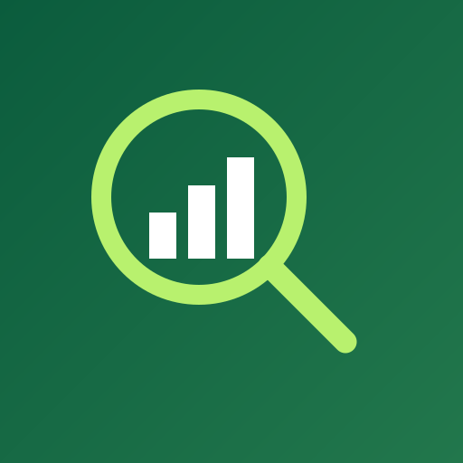

Registra tus productos
Agrega precios de compra, precios de venta, cantidades y stock minimo.
→
Detector de PerdidasDetector de Perdidas analiza tus ventas, inventario y gastos para mostrarte posibles perdidas y oportunidades de mejora.
Buenos dias, Maria ✦
Resumen de hoy · 24 SEP 2026
Muchos negocios saben cuanto venden, pero no siempre saben cuanto dinero estan dejando de ganar. La informacion existe, pero esta dispersa.
Estos pequenos detalles pueden convertirse en dinero inmovilizado:
“Los datos de tu negocio pueden contar una historia. Nosotros te ayudamos a entenderla.”
Detector de Perdidas es una aplicacion creada para ayudar a pequenos negocios a analizar su informacion y detectar posibles areas donde se esta perdiendo dinero.
Explorar funciones ↗Empieza con lo que ya sabes de tu negocio. La aplicacion hace el resto mas facil.
Agrega precios de compra, precios de venta, cantidades y stock minimo.
→Cada venta actualiza automaticamente tu inventario y tus estadisticas.
→Controla renta, servicios, proveedores, transporte y mantenimiento.
→La aplicacion analiza tus datos y muestra alertas y recomendaciones.
✓Informacion clara, reunida en un solo lugar y pensada para ayudarte a actuar.
Consulta cuanto producto tienes y detecta niveles bajos o exceso de inventario.
Ver en dashboard ↗Registra tus ventas y consulta cuanto has vendido y cuanto podrias estar ganando.
Ver en dashboard ↗Registra y clasifica los gastos de tu negocio para tener una vista completa.
Conocer mas ↗Consulta graficas y estadisticas sobre ventas, ganancias, gastos e inventario.
Ver reportes ↗Recibe avisos cuando la aplicacion detecte situaciones que deberias revisar.
Ver ejemplos ↗Obtén recomendaciones basadas en los datos registrados de tu negocio.
Como funciona ↗La aplicacion convierte tus datos en situaciones concretas que puedes revisar.
“Este producto tiene muchas ventas, pero su margen de ganancia es bajo. Considera revisar su precio de venta o costo de compra.”
Revisar producto ↗“Este producto lleva varios dias sin venderse. Considera analizar su precio, promocion o demanda.”
Revisar producto ↗“Tienes una cantidad elevada de este producto en comparacion con sus ventas recientes.”
Revisar producto ↗“Un ajuste de precio o una promocion podria ayudar a mejorar la rotacion. Analiza tus costos antes de realizar cambios.”
Analizar producto ↗Detecta patrones, revisa senales y toma decisiones con mas contexto.
No necesitas conocimientos avanzados de contabilidad.
La informacion se muestra mediante tarjetas, graficas y alertas.
Registra tus operaciones desde tu telefono.
Disenada pensando en tiendas y comercios que necesitan una herramienta sencilla.
Los datos registrados se analizan para encontrar situaciones que deberian revisarse.
Obtén informacion antes de decidir que hacer con tus productos, precios o inventario.
Si vendes productos y necesitas controlar tus ventas, inventario y gastos, Detector de Perdidas puede ayudarte a entender mejor tu negocio.
Quiero probarla ↗× Revisar datos manualmente.
× Dificil identificar productos problematicos.
× Inventario sin movimiento.
× Informacion dispersa.
× Poco conocimiento sobre los margenes.
✓ Informacion centralizada.
✓ Alertas sobre situaciones que requieren atencion.
✓ Control del inventario.
✓ Analisis de ventas.
✓ Seguimiento de gastos.
✓ Reportes y graficas.
Obtén una vision general de tu negocio en segundos. Mira ventas, ganancias, gastos y alertas sin perderte en hojas de calculo.
Conocer los reportes ↗Consulta el comportamiento de tu negocio y encuentra tendencias que podrian ayudarte a tomar mejores decisiones.
01 Leche 1 L 32
02 Cereal 27
03 Pan integral 18
04 Sabritas 12
Detector de Perdidas puede utilizar analisis inteligente para interpretar la informacion registrada y presentar recomendaciones faciles de comprender.
Detectamos algo que deberias revisar
Este producto tiene un margen de ganancia inferior al promedio de tus productos.
Tambien encontramos esto
Este producto lleva 25 dias sin registrar ventas.
Detector de Perdidas esta disenado para utilizar unicamente la informacion necesaria para proporcionar sus funciones.
Leer politica de privacidad ↗Si tienes otra pregunta, escribenos y te ayudamos.
Es una aplicacion para pequenos negocios que ayuda a analizar ventas, inventario y gastos.
No. La informacion esta disenada para mostrarse de manera sencilla y comprensible.
Tiendas, comercios y pequenos negocios que manejan productos, ventas e inventario.
No. La aplicacion proporciona analisis y recomendaciones basadas en los datos registrados. Las decisiones finales corresponden al propietario del negocio.
Si. Puedes registrar productos, precios, cantidades, stock, ventas y diferentes tipos de gastos.
La aplicacion esta preparada para incorporar analisis inteligente y generar recomendaciones basadas en la informacion registrada.
Mi aporte será combinar creatividad, visión de negocio y capacidad para generar ideas que hagan este proyecto más atractivo, útil y diferenciador. Quiero aportar propuestas originales para mejorar la experiencia del usuario, fortalecer la identidad visual y pensar en estrategias que lo conviertan en una idea con potencial emprendedor.
Escríbeme o llámame para conocer más sobre Detector de Pérdidas.
Empieza a conocer mejor tu negocio con Detector de Perdidas.
Tu resumen de hoy